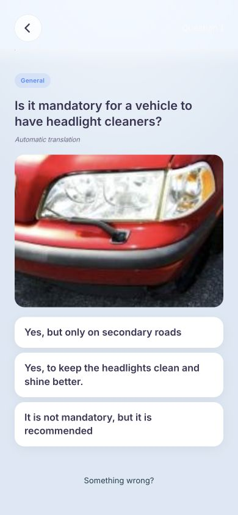
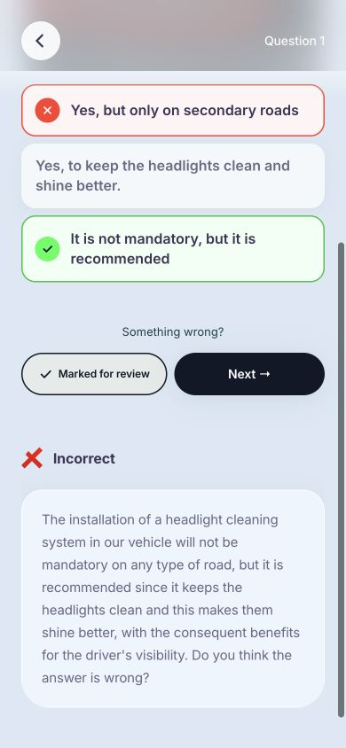
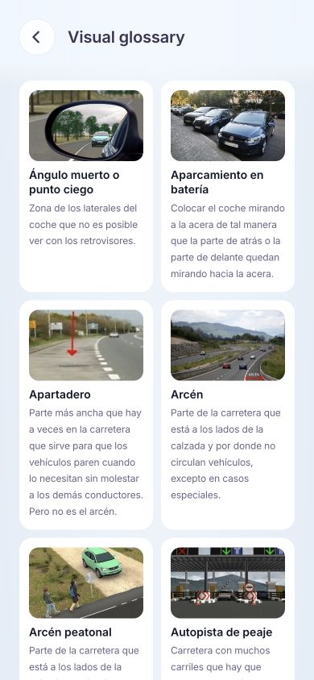
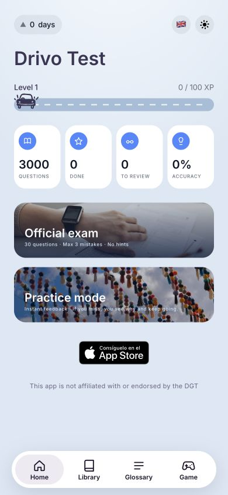
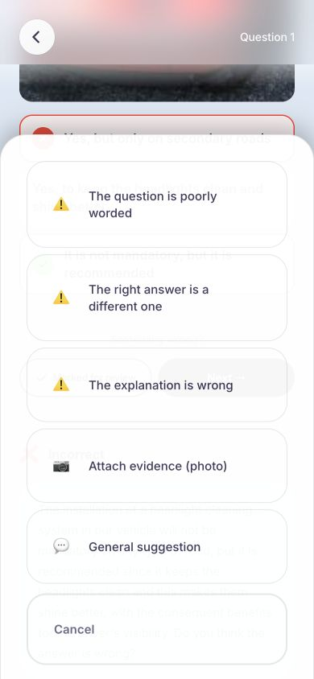

DetenciónParadaEstacionamiento
Help explain difficult terms
Similar road terms were hard to tell apart. I added explanations and a visual glossary to help learners understand the difference.
I researched, designed and built a free app to help learners in Spain understand driving theory and practise difficult questions again.
A place to practise,
understand,
and come back to.


I saw a gap between taking practice tests and understanding the rules. Unclear explanations, difficult wording and limited study time could get in the way. Learner interviews and early testing helped me focus on three needs.
Similar road terms were hard to tell apart. I added explanations and a visual glossary to help learners understand the difference.
Learners studied in short breaks. I offered flexible practice alongside full mock exams, so they could choose what fit their time.
A lucky guess can hide a gap. I added a way to save doubts and bring those questions back into review.
I organised the app around three study goals. Learners can choose the kind of help they need, then return to difficult questions through review.
Answer a question and see feedback straight away.
Try 30 questions without hints, with up to three mistakes allowed.
Search and filter questions to study a specific topic.
I led the research and product design, then used AI as a coding partner to turn those decisions into a working app. I built the web version first and adapted it for iPhone, taking the product from design to launch.
Learners could recognise an answer without knowing why it was right. I added immediate explanations and a visual glossary to help them connect each answer to a rule.

One question at a time, with clear answer choices.

Feedback explains the rule after an answer.

Pictures and short definitions make unfamiliar terms easier to explore.
A short study break and a full mock exam need different kinds of support. I separated the modes so learners could choose between learning with feedback, testing themselves and looking up a topic.

Practice gives feedback. Mock exams offer 30 questions without hints.
Search and filters help learners find the questions they want to understand.
A correct answer can still be a guess. I added “Unsure” so learners could save that doubt. Answer history helps bring difficult questions back, with the aim of closing gaps that scores alone can miss.
“Marked for review” confirms that a question has been saved.

Learners can report unclear wording, an answer or an explanation that needs checking.
Review uses answer history to bring difficult questions back. I still need to test whether it helps learners remember more over time.
The next step is to test three learning goals with a wider group of learners. These are the measures I plan to use; they are not results yet.
The app currently shows progress saved on each device. Broader usage measurement and evidence of improved exam pass rates are still to come.